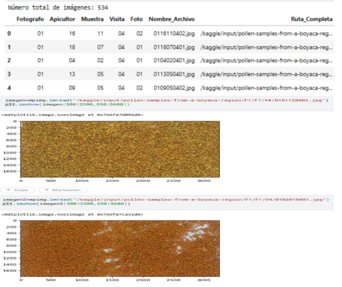
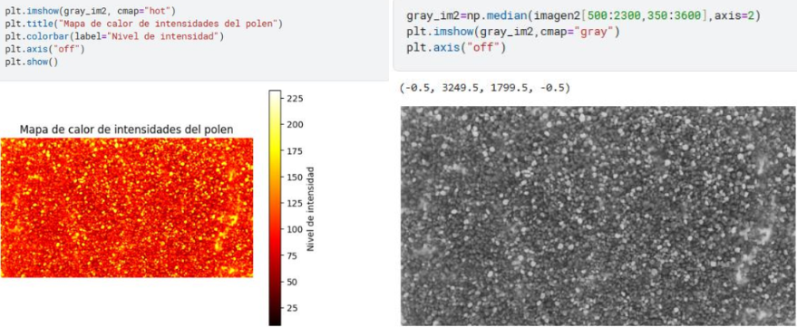
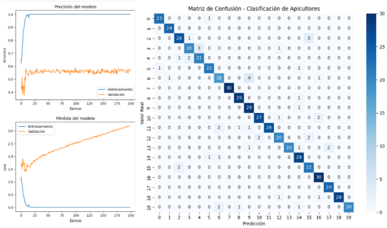

Modelo de Predicción de Polen
Proyecto de análisis y predicción de niveles de polen utilizando técnicas de ciencia de datos y aprendizaje automático. El objetivo fue anticipar la concentración de polen a partir de datos históricos y variables ambientales, ayudando a la toma de decisiones relacionadas con salud y prevención.
- Python
- Pandas
- NumPy
- Matplotlib
- Scikit-learn
- Machine Learning
- Análisis de Datos
- Visualización de Datos
- Kaggle
- Modelos Predictivos
Problema y datos
La identificación manual del polen es un proceso lento y dependiente de expertos. Para este proyecto se trabajó con aproximadamente 1.800 imágenes, organizadas en 20 clases, cada una correspondiente a un apicultor diferente.

Procesamiento y modelo
Las imágenes fueron preprocesadas mediante redimensionamiento y normalización. Se implementó una Red Neuronal Convolucional (CNN) para resolver un problema de clasificación multiclase.

Entrenamiento y resultados
El modelo se entrenó utilizando Adam y una división 80/20 de los datos. Los resultados muestran un buen desempeño general, aunque con oportunidades de mejora para reducir el sobreajuste.

Conclusión
Este proyecto demuestra la aplicación práctica del Machine Learning en el análisis de imágenes, mostrando el potencial de la inteligencia artificial para automatizar procesos científicos.